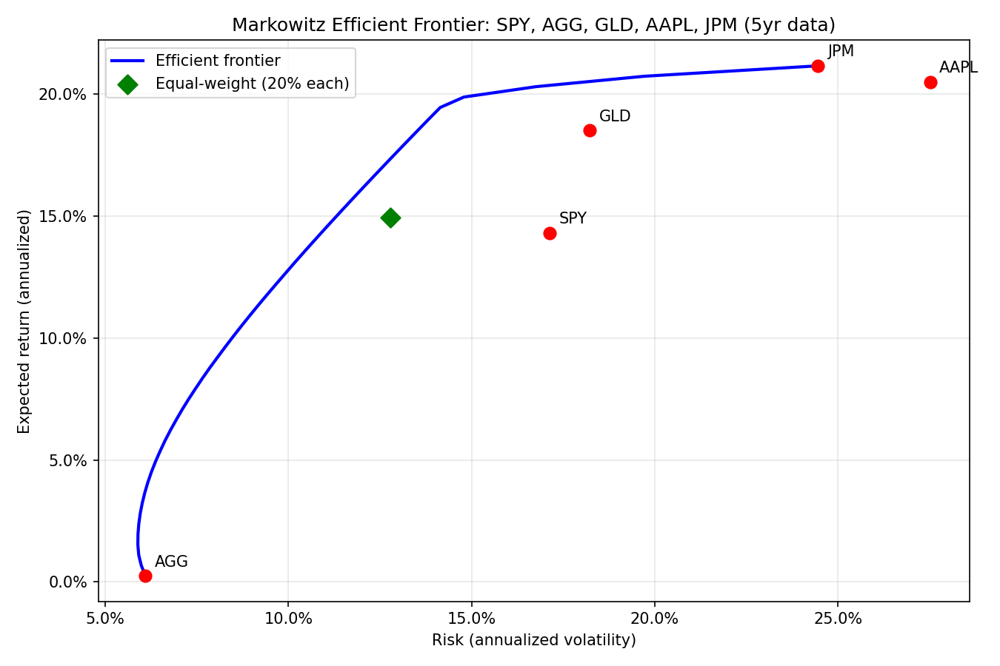

Turning "don't put all your eggs in one basket" into actual math
Everyone has heard "don't put all your eggs in one basket." I wanted to know what was actually behind that phrase, mathematically, not just as advice. That curiosity led me to Harry Markowitz's 1952 paper on portfolio theory, and the more I read into it, the more the complicated math behind it pulled me in instead of pushing me away. I had never built anything like this before, and I wanted to put my own version of it together instead of just reading about it.
Before touching any code, I worked through the math with two made up assets by hand. One had a 10% expected return with 20% volatility, the other 6% with 10% volatility, and a correlation of just 0.3 between them. Split your money evenly between them and the math says your risk should land around 12.45%, not the 15% you would get if you just averaged the two assets' volatility together. That gap, getting lower risk for free without giving up any return, is the entire idea behind the paper. Seeing that work out with a calculator before I ever wrote a line of code made the rest of it feel a lot less abstract.
From there I built the real version using five years of actual market data: SPY (an S&P 500 index fund), AGG (a bond fund), GLD (a fund that tracks gold), AAPL (Apple), and JPM (JPMorgan Chase), picked specifically to span stocks, bonds, and gold instead of five things that would all move together. I wrote the code to calculate each asset's return and risk, built the full covariance matrix, and used an optimizer to trace out the efficient frontier, the curve showing the lowest possible risk for every level of return.
The moment that actually surprised me most was getting stopped by bugs I never saw coming. I used Cursor as a coding assistant throughout this, the same way you would lean on a tutor, but every fix still came down to me actually understanding what broke and why, not just asking it to make the error disappear. The first bug was quiet: the tool I used to pull stock data reordered my five tickers alphabetically without telling me, so even though all my calculations were correct, the chart ended up labeling the wrong dots with the wrong stock names. I only caught it by checking the chart against my own printed numbers and noticing they did not match. The second bug stopped the whole script cold, it tried to save the final chart to a folder that only existed on the computer the original code was written on, not mine, so it crashed on the very last line after doing everything else correctly. Both times the fix turned out to be one line of code, but finding that line meant actually understanding what every piece of the script was doing instead of just running it and hoping. That is the part nobody mentions when they talk about building something like this. The setbacks are not really about the math, they are about learning to sit with something broken long enough to find exactly where it broke.
Once it was working, the chart proved the entire point.

AGG sat at the bottom with the lowest risk and lowest return, AAPL carried the highest risk of anything in the set without actually beating JPM's return, and a portfolio split evenly across all five landed close to the optimal curve but not quite on it. Diversification is not just a saying. It is a real, provable reduction in risk that shows up the moment you actually run the numbers.
If I am being honest, this looked intimidating before I started, complicated math, real code, a model that won a Nobel Prize. My advice to anyone who feels that way about something is to dive in headfirst anyway and actually give it real time instead of looking at it once and deciding it is too complicated. It was not as hard as it looked. It just took sitting with it long enough to actually understand it instead of giving up at the first wall.